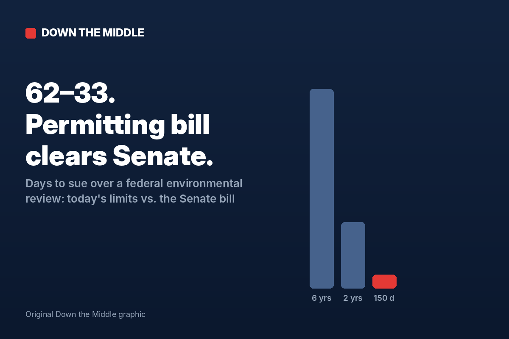
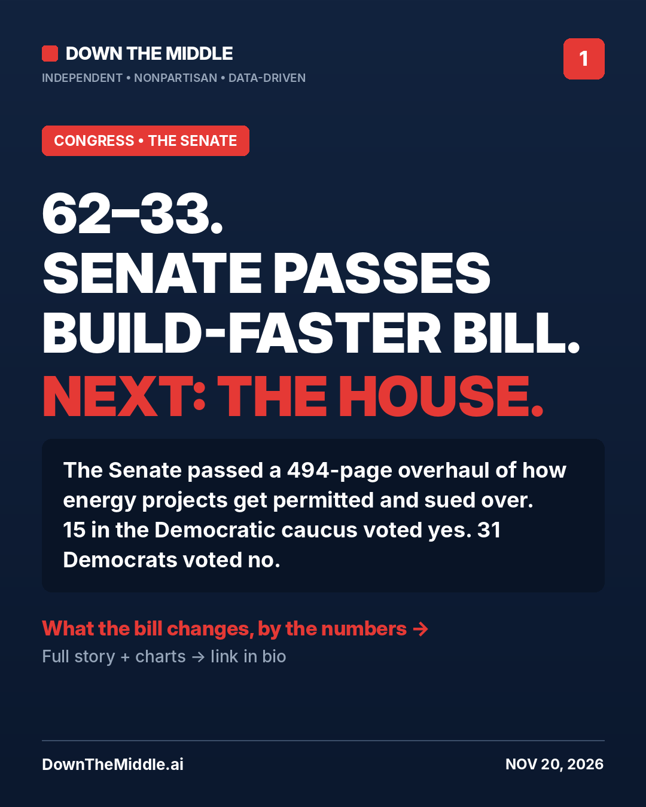
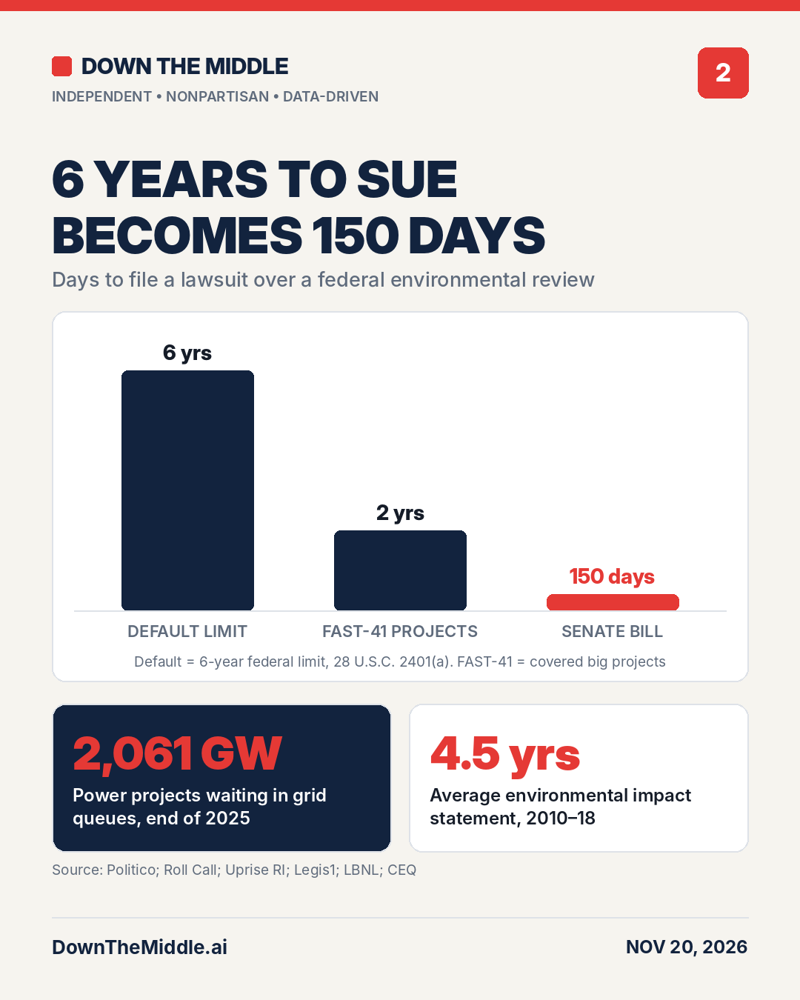

The Senate Passed a Permitting Overhaul 62–33. Here’s What It Changes, by the Numbers.
November 20, 2026 · Independent, nonpartisan analysis

The Senate on Thursday night passed the biggest rewrite of federal permitting rules in decades, 62–33. [1] [2] The bill, S. 5653, the Bipartisan American Affordability and Jobs Act, is meant to make it faster to build power lines, pipelines, power plants and other projects. [1] [3] Politico called it the most significant energy bill to clear the Senate since the 2022 Inflation Reduction Act. [1] It now goes to the House, which last year passed its own, narrower permitting bill. [2] [10]
The timing matters. Democrats take control of both chambers on Jan. 3, and the incoming Democratic chairs of the key committees oppose this version. [2] [17] We covered the House math for January on Wednesday and the lame-duck rush on Pentagon money on Thursday. This post looks at what the permitting bill would change.
By the numbers
The documented figures behind Thursday’s vote.
What happened
Four senators wrote the bill over nearly 21 months: Republicans Shelley Moore Capito of West Virginia and Mike Lee of Utah, and Democrats Sheldon Whitehouse of Rhode Island and Martin Heinrich of New Mexico. [2] They lead the two committees that handle energy and environmental permits. [1] [2] The White House backed the bill in a formal policy statement and lobbied for it. [1] [2]
No amendments got a vote. Oregon Democrats Jeff Merkley and Ron Wyden refused to agree to a time limit on debate. They wanted votes on keeping data centers off federal land and out of the bill’s protections, and on limiting tariffs on clean-energy parts. [1] [2] Two Republicans, Josh Hawley of Missouri and Mike Rounds of South Dakota, voted no over new federal power to approve interstate power lines and the use of eminent domain. [1] [2] [3]
How the Senate voted
Senators by party and vote. Hover or tap a segment for the source.
Lighter segments are Down the Middle calculations: about 47 Republican yes votes (62 minus the 15 Democratic-caucus yes votes) and 5 senators not voting (100 minus 95 votes cast). Politico counts 14 Democrats voting yes; South Dakota Searchlight counts 15 members of the Democratic caucus, which includes independents. [1] [2] [3] [4]
What the bill changes
The bill touches the main laws that govern building permits: the National Environmental Policy Act (NEPA), the Endangered Species Act, the Clean Water Act, the National Historic Preservation Act and the Federal Power Act. [2] Summaries of the introduced text describe these changes: [6] [7] [8]
Deadlines. Agencies would have one year to finish an environmental assessment and two years for a full environmental impact statement, with exceptions and extensions. Wildlife consultations under the Endangered Species Act would drop from 90 to 60 days. [6] [7] [8] Lawsuits. Challenges to a NEPA review would have to be filed within 150 days. A court that finds a NEPA violation would generally send the review back to the agency to fix, within 180 days, while the permit stays in effect. [5] [6] [9] Power lines. The bill gives federal regulators new authority over interstate transmission. Rounds says a contested power-line case would move to federal regulators if a state hasn’t resolved it within 12 months. [1] [2] [3] Other changes. Data centers would have to cover more of the grid costs they create, and permits could not be revoked for political reasons. That second piece is partly a response to the administration’s moves against wind and solar projects. [2]
The clocks the bill would set
Months. Grey bars are today; red bars are the bill’s deadlines. Hover or tap a bar for the source.
The 4.5-year average comes from CEQ’s study of 1,276 impact statements finished from 2010 to 2018; more than 70% took two to five years. [13] [14] The bill’s deadlines are from summaries of the introduced text and allow exceptions and extensions. The 494-page substitute the Senate passed may differ in detail. [5] [6] [8]
Insight 1
The window to sue would shrink to about 7% of the usual limit
Most lawsuits against federal agency decisions can be filed up to six years later, under the general federal statute of limitations. [15] Big projects covered by a 2015 law known as FAST-41 already get a shorter two-year window. [5] The bill sets 150 days for NEPA claims and for historic-preservation challenges. [5] [7] That is about 7% of the six-year default and about a fifth of the FAST-41 window (our calculation). Challengers would also need to have filed a substantive comment during the review and show a direct injury. [5] For builders, that means a project can be challenged for months, not years. For opponents, it means fewer chances to stop a project in court.
How long you have to sue
Days to file a lawsuit over a federal environmental review. Hover or tap a bar for the source.
The six-year limit is the general federal default for suits against the United States and applies to most agency challenges. [15] FAST-41 and the 150-day figure are from coverage of the bill. [5] [6] Year-to-day conversions are ours.
Insight 2
Permits aren’t the only bottleneck. The grid line is longer.
At the end of 2025, 2,061 gigawatts of power plants and batteries were waiting to connect to the grid, Lawrence Berkeley National Laboratory found. That’s down 10% from a year earlier and down from nearly 2,600 GW at the end of 2023. [11] [12] The wait is long: the typical project took well over three years to get a signed connection agreement. Of the capacity that applied from 2000 to 2020, only 13% was running by the end of 2025, and 75% had withdrawn. [11]
The mix is shifting, too. Natural gas was the only major type that grew in the queue, up 86%, while solar, wind and storage fell. [11] Because the bill speeds power lines and gas pipelines alike, both clean-energy groups and the oil industry backed it. [1] [2] Whether it shortens the queue depends on how fast new transmission gets built, not just on faster reviews.
What’s waiting to plug in
Gigawatts of proposed power plants and storage in interconnection queues, end of 2025. Hover or tap a bar for the source.
Queue capacity is what developers have proposed, not what will be built; most projects in past queues withdrew. [11] Source: Lawrence Berkeley National Laboratory, Queued Up 2026 edition. [11] [12]
Insight 3
The fast path in the House needs about 57 more votes than last time
Speaker Mike Johnson told Politico he would first try to pass the bill under a fast-track “suspension” rule, which needs a two-thirds vote. If that fails, he would use a regular rule that needs a simple majority. [1] The House’s own permitting bill, the SPEED Act, passed 221–196 last December with 11 Democrats. [10] With the same 417 members voting, two-thirds would be 278 votes, about 57 more than the SPEED Act got (our calculation). In the Senate, more than half the Democratic caucus voted no. [2] Hakeem Jeffries, Democrats’ pick for speaker in January, has said the bill falls short on environmental review and tribal consultation. [1] So the simple-majority route, which leans on Republicans, may be the realistic one. Politico notes that GOP attendance has been a problem in the lame-duck House. [1]
How we got here
Solid dots are documented events. Dashed dots are scheduled or expected.
- Dec 18, 2025House
The House passes the SPEED Act permitting bill 221–196, with 11 Democrats. [10] - Sep 30, 2026Senate
Capito, Whitehouse, Lee and Heinrich introduce S. 5653, 417 pages. [7] [8] - Nov 3Voters
Midterms. Democrats win control of the Senate and the House, effective in January. [17] - Nov 7Senate
A 494-page substitute is released. [5] - Nov 9Senate
Senate votes 73–25 to end debate on taking up the bill. Attorneys general from 15 states and D.C. send a letter opposing it. [5] [9] - Nov 10Senate
Senate agrees to take up the bill, 62–21. [5] - Nov 19Senate
The bill passes 62–33 with no amendment votes. [1] [2] - After ThanksgivingHouse
House vote expected, by suspension or by rule. Expected [1] [2] - Dec 11Congress
Government funding runs out, competing for floor time. Scheduled [18] - Jan 3, 2027New Congress
Democrats take over. A bill not passed by then must start over. Scheduled [1] [17]
How each side makes its case
Same bill, three readings
We describe each position in our own words and check it against the data.
Supporters (both parties)
- Capito says the bill “threaded a needle” few Senate bills manage, and calls it a step on affordability. [2] [3]
- Heinrich says it gets cheaper power on the grid faster and makes data centers pay their share. He claims it will create more than 100,000 jobs. [3]
- The White House, the oil industry’s API, the American Clean Power Association, the U.S. Chamber and manufacturers back it. [1] [2]
Critics (mostly Democrats, plus 2 Republicans)
- The Sierra Club, NRDC and the National Congress of American Indians oppose it, along with 17 Democratic-led states, Roll Call reports. [2]
- Merkley says it has too many provisions Democrats opposed. A Western conservation group says it sells out to oil and tech companies. [2] [3]
- Hawley and Rounds object to federal power over local power-line siting and eminent domain. [1] [2] [3]
What the data shows
- The average impact statement took 4.5 years from 2010 to 2018, more than twice the bill’s two-year deadline. [13] [14]
- The 150-day lawsuit window is about 7% of the six-year default (our calculation). [5] [15]
- Only 13% of grid capacity requested from 2000 to 2020 got built, so permits are one bottleneck among several. [11]
Down the middle
Both sides are describing the same trade-off. Reviews do take years: the average impact statement took 4.5 years. [13] [14] And demand for power is rising with data centers. [1] [2] Supporters say deadlines and shorter lawsuit windows will let projects of every kind, from solar farms to gas pipelines, get built faster and cut power bills. Critics say the same changes cut back the public’s ability to challenge projects, weaken tribes’ say and give developers an edge over landowners. [2] [3] Neither the 100,000-jobs claim nor the promise of lower power bills has an official score we could find; both are claims by supporters. [3] Faster permits alone may not clear the grid backlog, which is mostly about connecting projects and building lines. [11] What’s certain is the clock: if the House doesn’t pass the bill in the few weeks before Jan. 3, it starts over in a Congress led by Democrats who wanted changes. [1] [2]
What to watch
After Thanksgiving: whether Johnson tries the two-thirds suspension route or a simple-majority rule. [1] House Democrats: how many follow Jeffries’ objections or side with Democrats like Rep. Scott Peters who back permitting changes. [1] [2] Floor time: whether the Dec. 11 funding fight crowds out the vote. [18] Jan. 3: if the bill isn’t law by then, watch incoming chairs Merkley and Rep. Jared Huffman, who both want a different bill. [2]
Share it


Sources and primary documents
- [1] Politico via Yahoo News — Senate passes landmark permitting deal (Nov 19–20, 2026)
- [2] Roll Call — Sweeping permitting overhaul passes Senate, on to House (Nov 19, 2026)
- [3] South Dakota Searchlight via Rapid City Post — Rounds votes no, but federal permitting overhaul passes US Senate (Nov 20, 2026)
- [4] Washington Examiner — The 31 Democrats and two Republicans who voted against permitting reform bill (Nov 19, 2026)
- [5] Uprise RI — Whitehouse permitting bill advances in Senate, 73–25; critics say it tilts to fossil fuels (Nov 13, 2026)
- [6] Legis1 — Senate permitting bill would set review deadlines and limit remedies (Nov 9, 2026)
- [7] International Economic Development Council — Senate bipartisan permitting reform package: what economic developers need to know (Oct 7, 2026)
- [8] IHMM — Federal permitting reform: S. 5653, the Bipartisan American Affordability and Jobs Act of 2026 (Oct 24, 2026)
- [9] Nature World News — US Senate passes permitting overhaul that would limit environmental lawsuits (Nov 20, 2026)
- [10] Axios — House passes permitting bill, but Senate plans big changes (Dec 18, 2025)
- [11] Lawrence Berkeley National Laboratory (primary data) — Backlog of power plants seeking grid connection eased somewhat in 2025 (Jul 1, 2026)
- [12] Lawrence Berkeley National Laboratory (primary data) — Queued Up: 2026 Edition (Jul 2026)
- [13] White House Council on Environmental Quality (primary data) — Environmental Impact Statement Timelines, 2010–2018 (Jun 12, 2020)
- [14] Datawrapper chart of CEQ data — Average time to complete an EIS, 2010–2018, was 4.5 years
- [15] 28 U.S.C. § 2401 (primary law, via Cornell LII) — Time for commencing action against United States
- [16] GovInfo (primary document) — S. 5653 as introduced, 119th Congress
- [17] Yahoo News — Final 2026 midterm results: Democrats clinch 56-seat Senate majority (Nov 18, 2026)
- [18] Military.com — Democrats plan to use NDAA and December funding deadline to shrink Trump’s $1.5T defense budget (Nov 9, 2026)
The ~47 Republican yes votes, 5 senators not voting, the 7% and one-fifth lawsuit-window comparisons, year-to-day and year-to-month conversions, the 278-vote two-thirds threshold and the 57-vote gap are Down the Middle’s calculations from the cited figures. Bill deadlines are from summaries of the introduced text; the passed substitute may differ. The 100,000-jobs figure is Sen. Heinrich’s claim. Queue figures are proposed capacity, not built capacity.